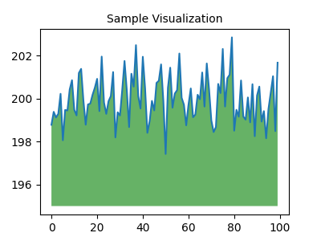

Problem 1
Kepler's Third Law: Derivation and Implications
Introduction
Kepler's Third Law of planetary motion establishes a profound relationship between the square of the orbital period of a planet and the cube of the semi-major axis of its orbit. This law is fundamental in celestial mechanics and has significant implications for our understanding of gravitational interactions in the universe.
Derivation of Kepler's Third Law
To derive Kepler's Third Law for circular orbits, we start with two key principles: Newton's Law of Gravitation and the concept of centripetal force.
- Newton's Law of Gravitation states that the gravitational force \( F \) between two masses \( m_1 \) (the central body, e.g., the Sun) and \( m_2 \) (the orbiting body, e.g., a planet) is given by:
$$ F = \frac{G m_1 m_2}{r^2} $$
where \( G \) is the gravitational constant.
- Centripetal Force required to keep the planet in a circular orbit is given by:
$$ F = \frac{m_2 v^2}{r} $$
where \( v \) is the orbital speed of the planet.
- Setting the gravitational force equal to the centripetal force, we have:
$$ \frac{G m_1 m_2}{r^2} = \frac{m_2 v^2}{r} $$
We can cancel \( m_2 \) from both sides (assuming \( m_2 \neq 0 \)):
$$ \frac{G m_1}{r^2} = \frac{v^2}{r} $$
- Rearranging gives us:
$$ v^2 = \frac{G m_1}{r} $$
- The orbital speed \( v \) can also be expressed in terms of the orbital period \( T \):
$$ v = \frac{2 \pi r}{T} $$
- Substituting this expression for \( v \) into the equation for \( v^2 \):
$$ \left(\frac{2 \pi r}{T}\right)^2 = \frac{G m_1}{r} $$
- Simplifying this equation leads to:
$$ \frac{4 \pi^2 r^2}{T^2} = \frac{G m_1}{r} $$
- Rearranging gives us:
$$ T^2 = \frac{4 \pi^2 r^3}{G m_1} $$
This shows that the square of the orbital period \( T^2 \) is proportional to the cube of the orbital radius \( r^3 \):
Implications for Astronomy
Kepler's Third Law has several important implications in astronomy:
-
Calculating Planetary Masses: By observing the orbital period and radius of a planet, we can determine the mass of the central body (e.g., the Sun) using the rearranged form of Kepler's Third Law.
-
Determining Distances: The law allows astronomers to estimate the distances of planets from their central stars, which is crucial for understanding the structure of planetary systems.
-
Understanding Orbital Dynamics: The relationship helps in predicting the motion of celestial bodies, including satellites and exoplanets.
Real-World Examples
The Moon's Orbit Around Earth
The Moon orbits Earth with an average radius of approximately 384,400 km and an orbital period of about 27.3 days. Using Kepler's Third Law, we can verify the relationship:
- Orbital radius \( r \approx 384,400 \) km
- Orbital period \( T \approx 27.3 \) days \( \approx 2.36 \times 10^6 \) seconds
Calculating \( T^2 \) and \( r^3 \):
- \( T^2 \approx (2.36 \times 10^6)^2 \)
- \( r^3 \approx (384,400 \times 10^3)^3 \)
Orbits of Planets in the Solar System
The planets in our Solar System also follow Kepler's Third Law. For example, Earth has an average orbital radius of 1 AU (approximately 149.6 million km) and an orbital period of 1 year. The relationship holds true across all planets, demonstrating the universality of gravitational interactions.
Computational Model
To simulate circular orbits and verify Kepler's Third Law, we can implement a Python script. Below is a simple example using Python with Matplotlib for visualization.

Conclusion
Kepler's Third Law provides a fundamental understanding of the relationship between orbital period and radius for celestial bodies. This relationship extends beyond circular orbits to elliptical orbits, where the semi-major axis plays a similar role. The implications of this law are vast, influencing our understanding of planetary systems, satellite dynamics, and the gravitational interactions that govern the cosmos. ```
You can copy and paste this Markdown document into Visual Studio or any Markdown editor to view it properly formatted. The Python script included can be run in a Python environment with the necessary libraries installed (NumPy and Matplotlib) to visualize the relationship described by Kepler's Third Law.